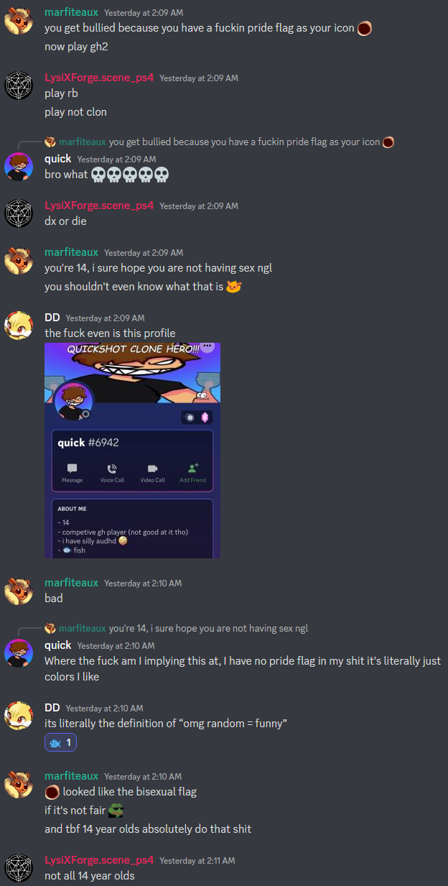
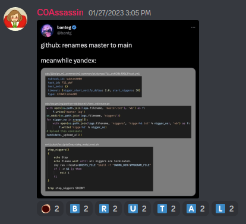
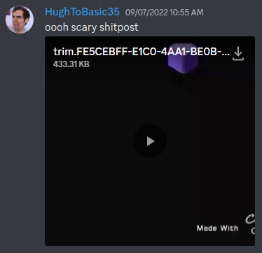
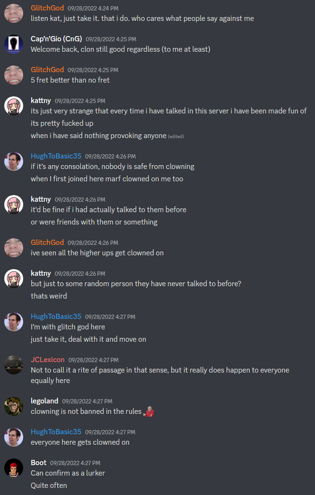
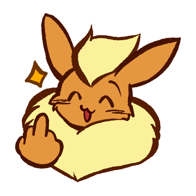

On Saturday, the 28th of January, 2023, I got in a bit of trouble in MiloHax for funposting. The other moderators had decided (unanimously!) that I had gone too far dunking on some Clon kid the previous night, stripped me of mod (which lmao Discord mod who cares) and the private homie chat role, all without me being there to defend myself.
No longer a homie! Effectively, my five years of contributions to mods, charts, documentation, website building, and preservation finances were no longer valued because I said something truly beyond the pale.
Which was that I don't think underage people (as in, 14 year olds) and sexuality mix. (Anyone who considers this log to be an attack on the concept of pride in general should turn their attention to my openly nonbinary girlfriend. Here's a drawing she did of one of her sonas for pride month, featuring a pride flag. Ah fuck it, here's another.)
Far from the immediate, knee-shaking, dumbfounded reaction that inspired the removal, everyone in the chat at the time continued dunking on this person, including one of those moderators.
At first, my reaction was of regret and sadness! It sucks that all that time and goodwill was wasted because I was mouthing off while intoxicated. I messed up (and admittedly it was pretty dumb to say) and I hoped there was some way I could make up for it.
But then I got to thinking: isn't this also the chat where mods post racist memes that make explicit reference to murdering black people?
{kind=link}
Isn't this also the chat where (in this case former) mods post videos involving animals being murdered with shotguns?
Isn't this also the chat with a literal "keeps it 100" role, infamous for making fun of Harmonix employees and community members looking for mod help?
And these are okay?
I don't like hypocrisy. I get the strange feeling this was something they've been wanting to do for a long time, and me saying that is just the excuse they used to finally push me out of the inner circle. Despite them very much doing the same things I do, down to encouraging me by giving me a role called "Bad", playing off the "marf bad" meme.
They'll tell you it's just in "good fun". I beg to differ.
I'm taking back gh2-deluxe.neocities.org and rb2-deluxe.neocities.org. I built both of these sites and they're using my emails, so I figured they'd make a nice little monument to what happens when folks try to moralize undeservedly. I don't expect this to hurt them much, they'll just direct people to the repos instead, and that's fine. This URL's in some of the finished mods, so people will find it anyway.
Here's a small list of all the things I did for MiloHax, not exhaustive:
- Mod work on GH2DX, chart bugfixing, audio remixing, text writing, and customizing the startup loader extensively (including a sprint for the final two weeks of 2.0 where I ported at least a dozen tracks, manually, without the help of Onyx, to the expansion setlist)
- Documentation and tutorials that are linked out frequently in the server
- Researching and datamining both prerelease GH1 and GH2
- My own discs, including Rocks the 360, the first time all the 360 exclusives were ported to PS2 in full (and bugfixed)
- Building websites and rewriting readmes for the repos
- Suffered literal stalking and harassment (as did my girlfriend) for my association with MiloHax
- Handing jnack $100 for the purposes of preserving DLC for Rock Band 4, a game I've never even played, simply because I wanted to help out ($100 that really should've gone to my bills or student loans, it must be said)
I just have a sneaking suspicion that there's a bigger reason all of this is considered null. Shame on the people who decided not to tell me. I thought we were friends.
Speaking of that nonbinary girlfriend, she drew this and told me to post it.
Actions have consequences. Better luck next time.